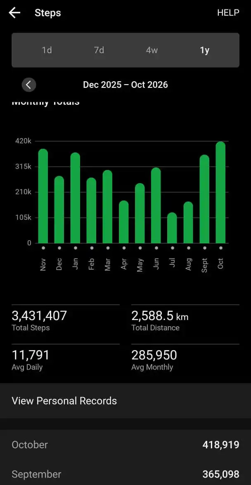

Week on 2026-10-31¶
(from the end of the last weeknote)
Life¶
A bunch of interesting things have happened.
Moved Houses¶
Major breakthrough is that I have finally moved to a new house and I am living with my friend Abhishek. He is a great person to live with.
My quality of life has increased significantly in the last couple of weeks. Most notably, Abhishek doesn’t let me get away with the bare minimum. Things like spending money on a good set of curtains, which is something I would absolutely not do otherwise. However with him around, he is like “I live in this house too and I refuse to have those as curtains”.
Abhishek also calls me “gand ke andhe” because I keep missing obvious things.
I find this very endearing.
The only downside of the new house is that I will have to find a new dinner spot that I like. The old shop from where I used to have my Shawarma is too far now. There is a shop near the new house, but it is highly inconsistent with the amount of chicken they provide, and I can not plan my meals with this amount of inconsistency.
Design Demo Nights.¶
Muskan was giving her first talk at DDN. She is a great person who has adopted me and she dragged me to Design Demo Nights meetup to watch her very first talk. I was not feeling too well, but I decided to show up anyway as it was an important day for her. She did really well.
It was a great decision overall. The event was very tightly scoped and all the talks were great. I took some notes on how to run the Meetups that I run. Ken really does an awesome job of curating the whole thing.
After the meetup we all went ahead and had dinner together. It was a great evening.
Meeting Arunima’s People¶
One fine evening Arunima said that her sister and friend from Germany were visiting and she asked if I wanted to meet her people.
She has spoken about these people in detail over the last year and I felt this was a great time to meet them. The evening arrived and it was great.
Her sister has just completed her Ph.D. and she was studying fractures in materials. I had no idea you could do this. In hindsight it seems quite obvious, that some field like this should exist.
I really really need to get my differential equations knowledge in order so that I can parse what they are saying.
The evening ended with one GREAT halwa and one not-so-great halwa. I didn't devour the good halwa out of politeness and concern for my health.
Making a new friend online¶
I was going through the sads when I made a new Reddit account and started engaging in the community.
Long story short, I have made an online-friend. :)
Hello :)
Kevin's Birthday¶
Kevin is another year older. Me and Swetha planned a very small, low-key birthday for Kevin. It was exactly how he likes it. No drama. Super Chill.
We went to a cheesecake place and had a cheesecake. We didnt even tell him that we were going to celebrate his birthday.
Reading¶
Didn’t get a lot of reading done these two weeks. Have been busy with house hunting and moving.
Outdoors¶
Ran a 10k, which was supposed to be nice, but my right leg kept cramping up. This was the same tibialis anterior issue that I’ve been battling since I was young. The reason it didn’t bother me so far is because I never tried to run fast. This was a 10k and I was hoping to run fast and that triggered the issue.
I completely bungled the race. My official time was close to 90 mins.
Went to see a physio twice. On the first session we did a round of dry needling for the tibialis, followed by some deep tissue work. I winced throughout the session; this physio does not pull his punches.
On the second session I actually screamed. Today we worked on the right calf and the leg in general. He dug his elbow into my glute and I screamed in pain. This happened for 20 mins. He was polite enough to let me know that I would not be able to walk after the session, which turned out to be true. I am writing this as my leg is throbbing. This is safe and expected to go down in a day or two.
Malnad is just about a month away. I am excited and scared for it. I am prepared enough to have a good time. Let’s see. I will start running with my race-shoes, so that I can break them in before the race.
Abhinav shared his Activities Feed on the Indie Web Club group and I know that I want to have this. I was looking at some data (through Garmin) and looks like I have managed to walk almost 4,20,000 steps in the month of October, 2026.

Work¶
The colleague has joined the team and I am having a blast showing him around the office etc. I get to relive my experience of joining such a dream workplace and that is great.
This experience is also very telling in that I get to witness how much institutional knowledge I have accumulated in just one year.
I am very very excited.
My project got released in beta. Now others are using it. There are bugs, which are being killed. All is good, though I would have loved to have written fewer bugs.
That’s it.
Thanks.
:)